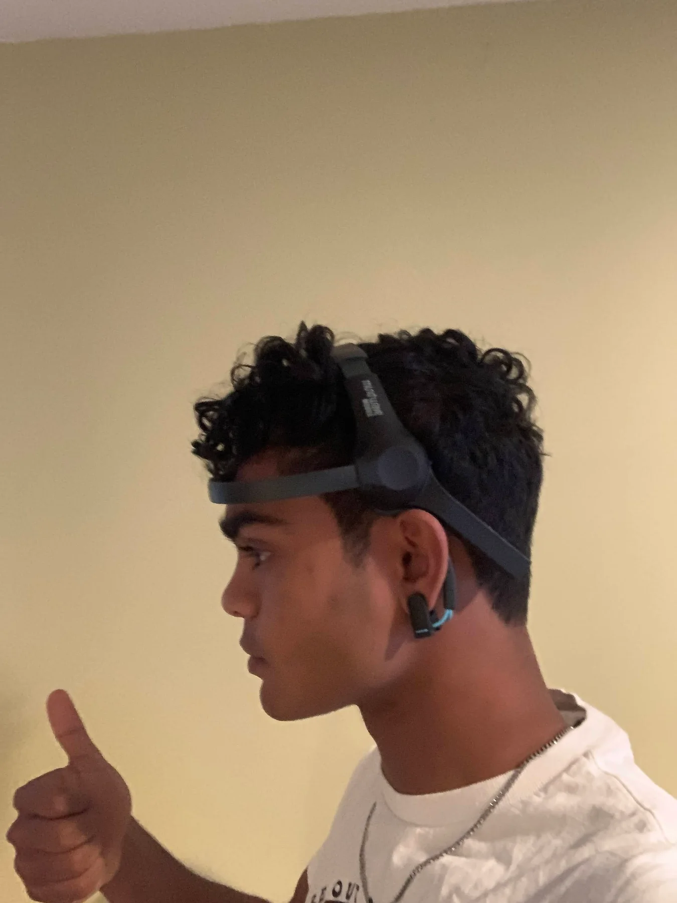
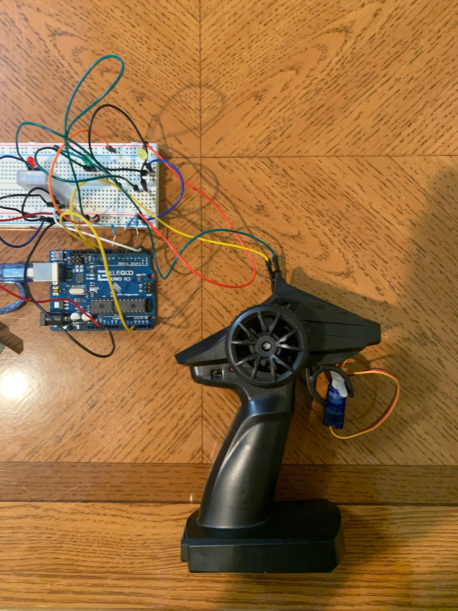
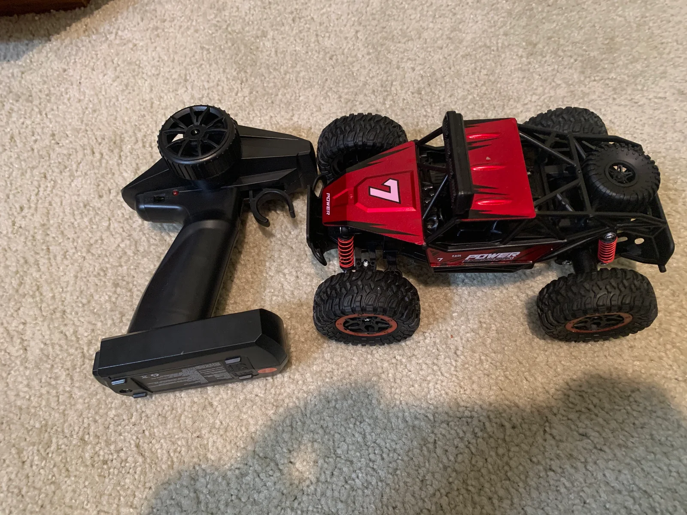

JOSH MURZELLO
JOSH MURZELLOProject overview
I built this prototype to connect EEG input to something tangible: driving an RC car. A NeuroSky MindWave headset sent EEG data to my laptop over Bluetooth. The laptop interpreted brainwave activity, including alpha and beta signals, as control states and passed commands to the Arduino over a second Bluetooth link.
Instead of replacing the car’s onboard electronics, I used a servo to physically operate the original remote’s forward/backward trigger. The remote then controlled the car through its existing radio link. This was an experimental brainwave-driven interface, not a system that reads specific thoughts.
System architecture
Headset → laptop
The MindWave headset collected EEG data and transmitted it to the laptop over Bluetooth.
Laptop → Bluetooth receiver → Arduino
The laptop mapped brainwave-derived activity into control commands. An HC-04 Bluetooth receiver passed those commands to the Arduino control layer.
Arduino → servo → remote → car
The Arduino drove the servo attached to the RC remote. The servo moved the forward/backward trigger, and the remote transmitted the resulting command to the car.
From headset to hardware
{kind=link}

{kind=link}


What made it interesting
Brain-computer interfaces are compelling because they sit at the edge of what feels possible, but this project was most valuable as a systems problem. It required signal processing, human factors, threshold tuning, and a lot of iteration around what kind of control is actually realistic for a person to sustain.
The result was a prototype that demonstrated the interface end to end. More importantly, it gave me a better feel for how to turn an ambitious concept into an experiment that can be tested, debugged, and improved in the real world.
What I took away
- Noisy data becomes usable when the interaction model is built around its strengths rather than idealized precision.
- Even experimental systems need strong feedback loops to feel trustworthy.
- Projects at the boundary of hardware and software are where I learn the fastest.